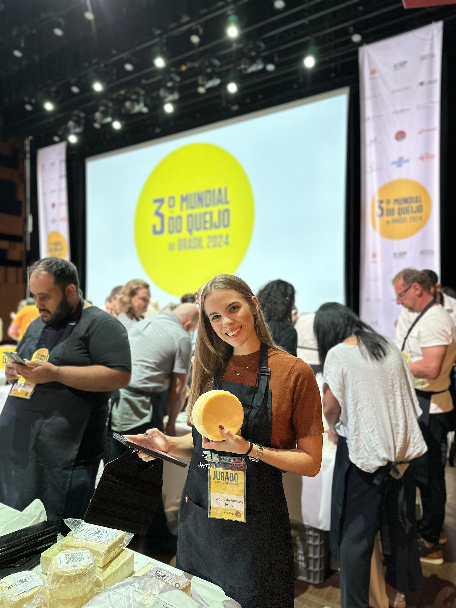

Sua indústria em conformidade, sem riscos e sem dores de cabeça.
Especialista em proteção legal e sanitária para indústrias de alimentos. Implantamos processos claros e documentação à prova de fiscalização para sua empresa produzir com segurança.
Agende uma conversaMultas, Apreensões e Processos Travados?
Para gestores da indústria de alimentos, a complexidade das normas da ANVISA e do MAPA não é apenas burocracia, é uma vulnerabilidade cara, que pode parar sua produção e manchar a reputação da sua marca.
Multas
Autuações que pesam no caixa e podem se repetir a cada nova fiscalização.
Apreensões
Produtos retidos geram prejuízo imediato e atrasam as suas entregas.
Processos Travados
Falta de controle sanitário robusto pode interditar a produção e manchar sua marca.
Isadora Andrade
Sou Isadora Andrade, Engenheira de Alimentos, Mestre em Engenharia Química e Especialista em Gestão da Qualidade, Higiene e Tecnologia de Produtos de Origem Animal.
Desde 2017, atuo intensamente em indústrias de alimentos, com foco em empresas sob SIF, onde a fiscalização é mais intensa e contínua.
Minha experiência vai além da teoria: já liderei processos de desinterdição de empresas, atuei como auditora em grandes redes de serviços de alimentação e sou jurada em concursos nacionais e internacionais de queijos, como o Mundial do Queijo e o Prêmio Queijo Brasil. Essa vivência prática me permite oferecer soluções robustas e eficazes para:
Implantação e controle de processos: Garantir operações eficientes e seguras.
Organização documental: Estar preparado para fiscalizações.
Preparação para fiscalizações: Evitar multas, apreensões e mantenha sua produção ativa.
Minha missão é transformar a complexidade da legislação em clareza e processos práticos, eliminando riscos sanitários e burocráticos para que você possa focar no crescimento e na inovação do seu negócio.

Soluções estratégicas para a conformidade e crescimento da sua indústria
- Implantação de Programas de Autocontrole (PAC)
- Manual de Boas Práticas de Fabricação (BPF), POP, PCAL, PPHO, APPCC
- Elaboração de Memorial Técnico Sanitário e Fichas Técnicas
- Representação legal junto aos órgãos fiscalizadores
- Acompanhamento dos processos e das exigências sanitárias
- Boas Práticas de Fabricação (BPF)
- Programas de Autocontrole
- Segurança de Alimentos e Rotulagem
- Análise, desenvolvimento e revisão de rótulos
- Atendimento às legislações do MAPA e ANVISA
- Modelos prontos e personalizados de POP, PPHO, PCAL, checklists, registros e manuais
- Atuação como auditora em redes de serviços de alimentação
- Auditoria de produtos cárneos para exportação
A conformidade do seu negócio começa com uma conversa
Não espere uma notificação para agir.
Vamos analisar sua situação atual e traçar um plano claro para garantir a segurança dos seus produtos e a tranquilidade da sua gestão.
Atendimento presencial ou online.